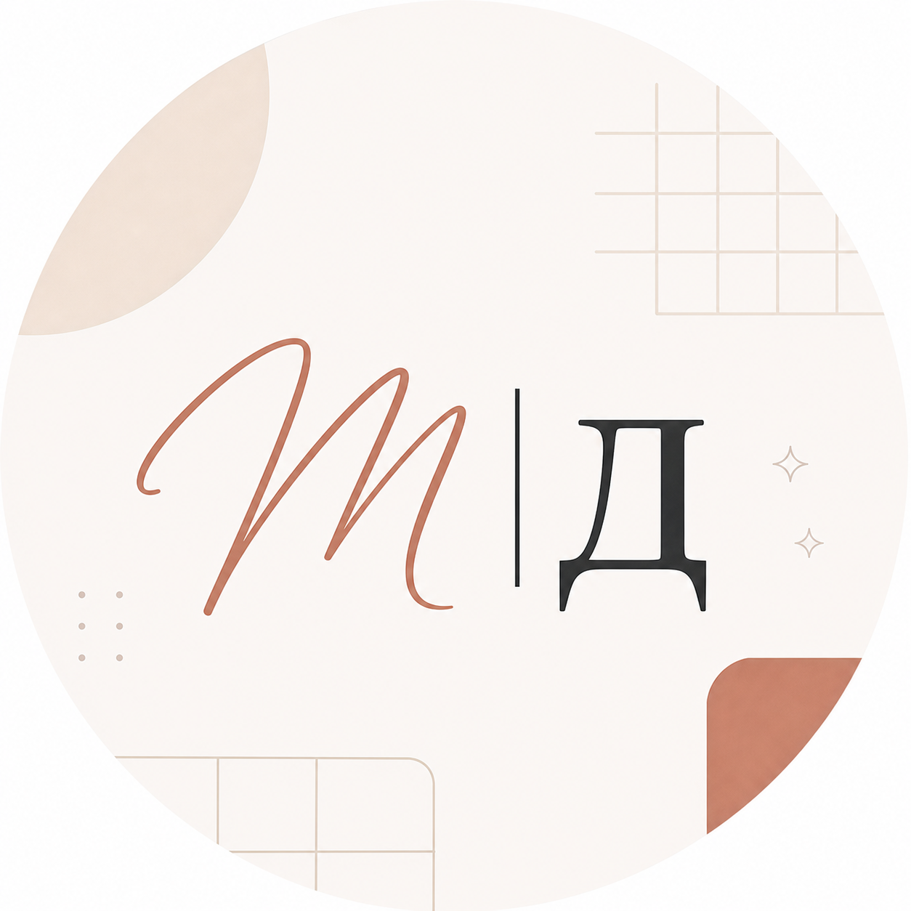
 Дизайн с характером
Дизайн с характером
Бренд-гайд: знак, цвета, шрифты и примеры. Всё, чтобы любая работа выглядела как моя.
Знак
Рукописная «М», тонкая черта и печатная «Д». Ставлю в аватарки, на обложки и в угол постов. Рукописное «Мария» беру только картинкой, другими рукописными шрифтами не заменяю.
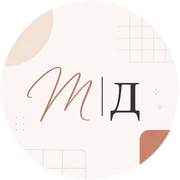
Цвета
Основа - тёплый крем и терракота. Чернила только для текста и тонких линий. Нажмите на цвет, чтобы скопировать код.
Шрифты
PT Serif - заголовкиобычный, жирный, курсив
Сайт на коде с нуля
Manrope - основной текст400, 500, 600, 700
Без конструкторов и шаблонов. Адаптирован для телефона и планшета. Делаю лендинги, калькуляторы и конструкторы для бизнеса.
ОбычныйСреднийПолужирныйЖирный
Фото
Тёплый свет, рабочая обстановка, терракота в одежде или интерьере.
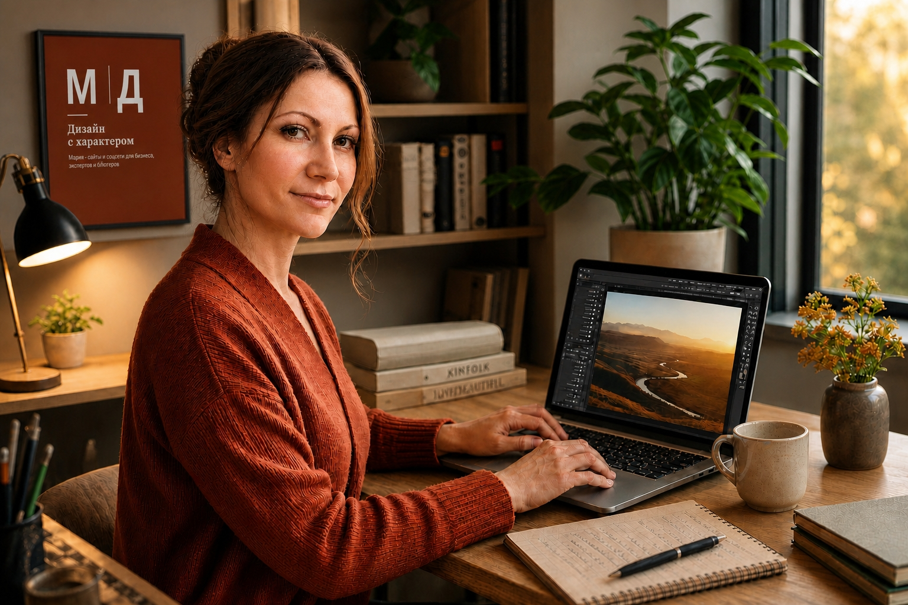
Примеры
Обложка группы ВК
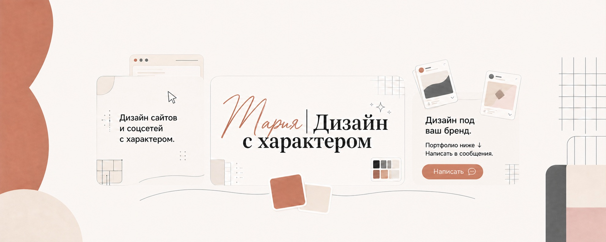
Обложки услуг
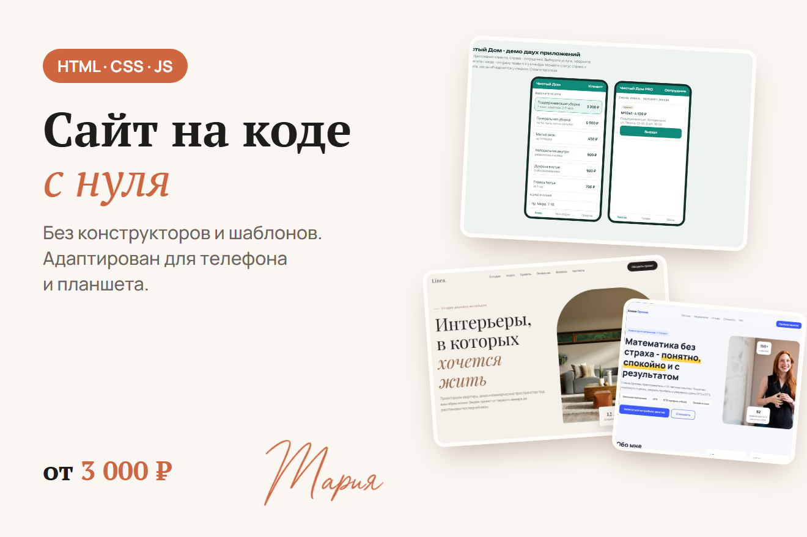
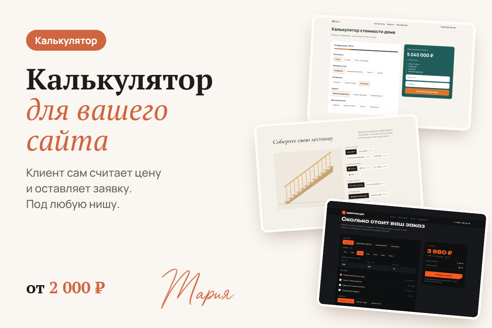
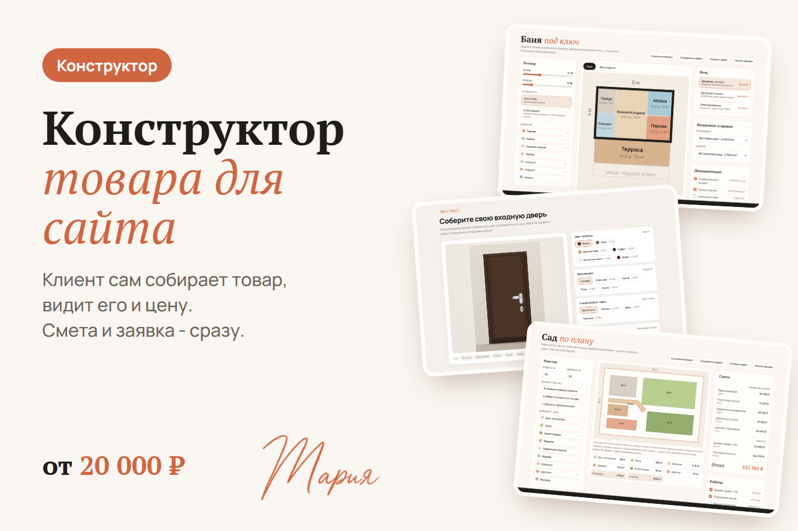
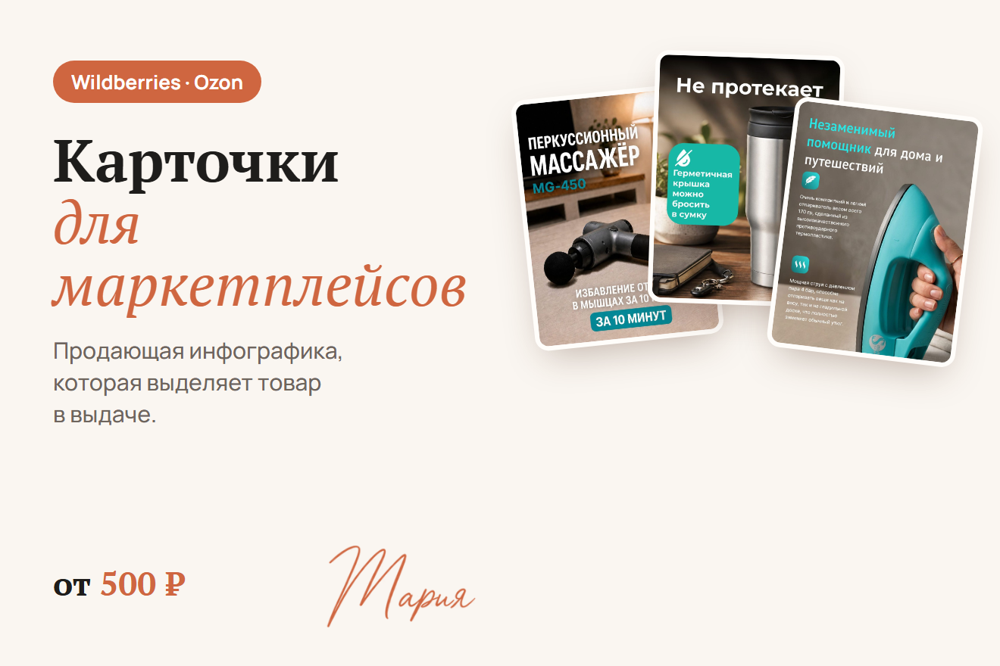
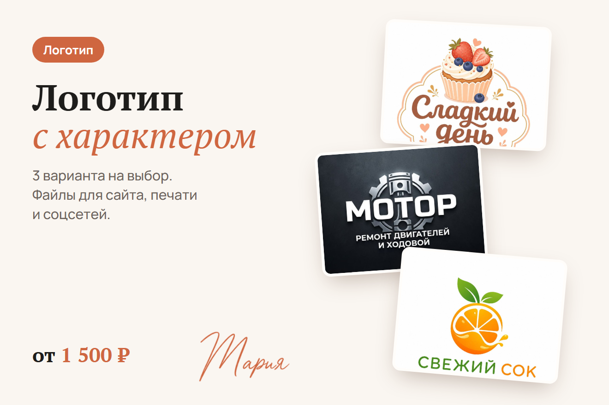
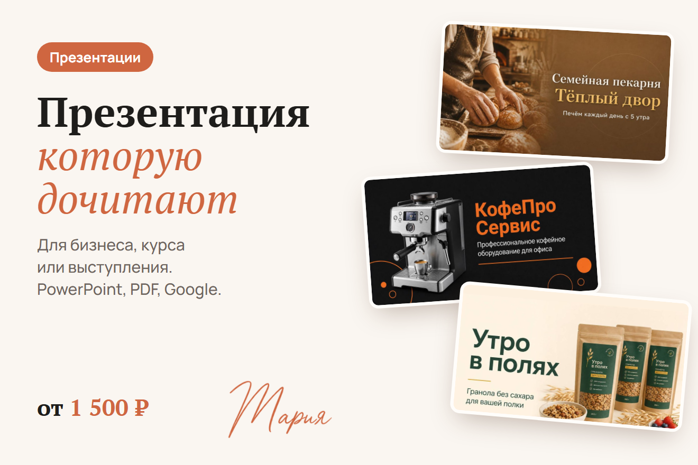
Посты
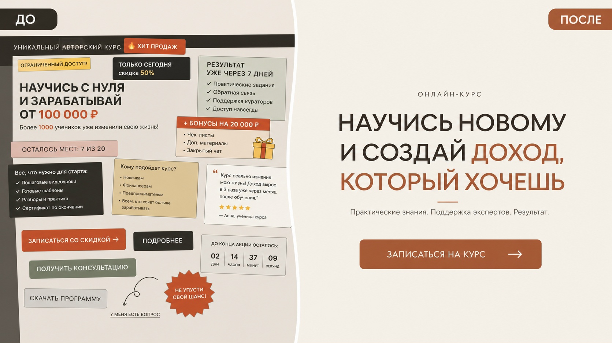
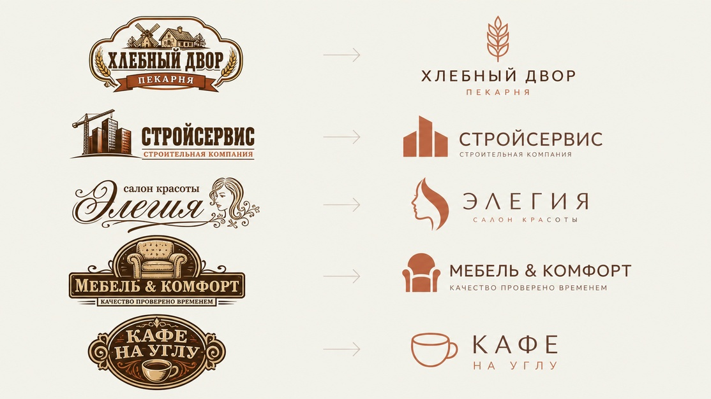
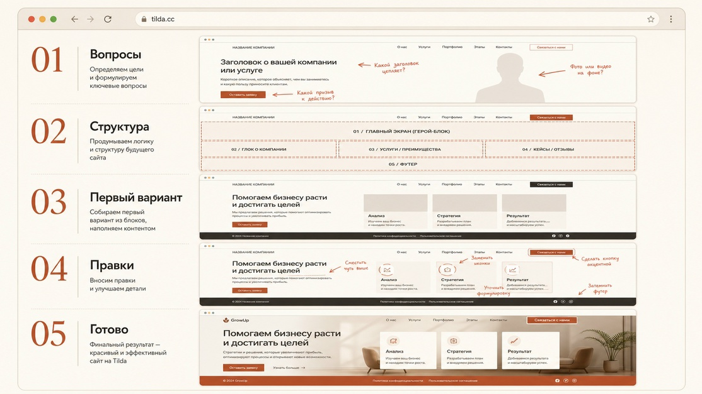
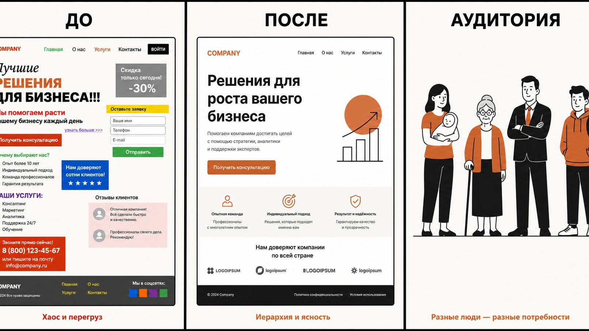
Правила
Делаю так
- Много воздуха и кремовый фон
- Крупный заголовок PT Serif, акцент курсивом в терракоте
- Скругления 14-18 px, мягкая тёплая тень
- Формат «До / После», чтобы показать результат
Так не делаю
- Кислотные цвета и холодный серый
- Другие рукописные шрифты вместо подписи
- Больше двух шрифтов в одной работе
- Перегруз плашками, стикерами и восклицаниями